Kahoku
Kahoku · Yamagata
Kahoku
Highlighted on the Yamagata map.
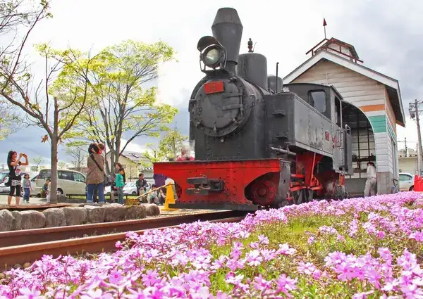
Stay
Ｂｅｄ＆ｖｅｇｅｔａｂｌｅ Ｋａｈｏｋｕ
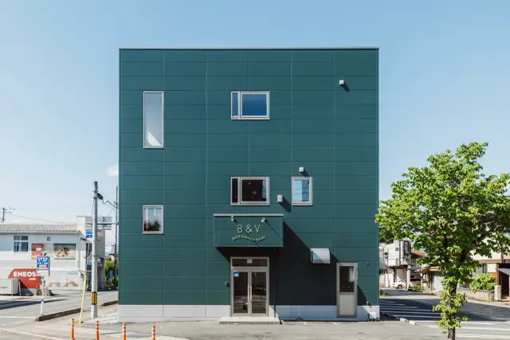
Bed & Vegetable Kahoku
Guesthouse in Kahoku, Yamagata.
Dining
一寸亭 本店
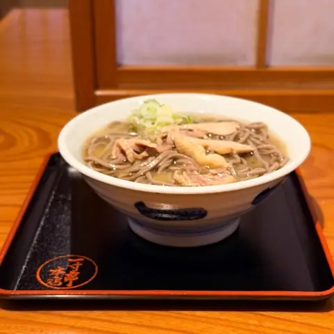
Chotto Tei Honten
Soba restaurant in Kahoku, Yamagata.
といや
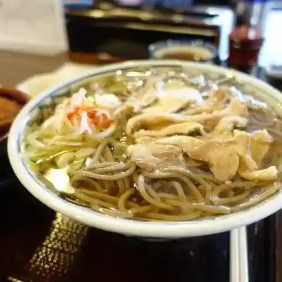
Toiya
Soba restaurant in Kahoku, Yamagata.
いろは本店
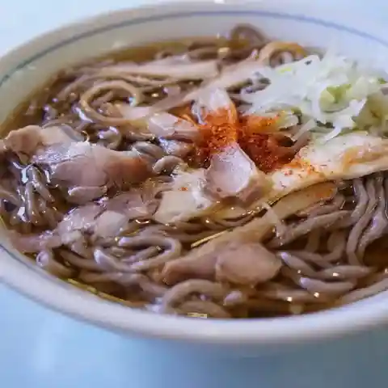
Iroha Honten
Soba restaurant in Kahoku, Yamagata.
白鳥十郎そば本舗
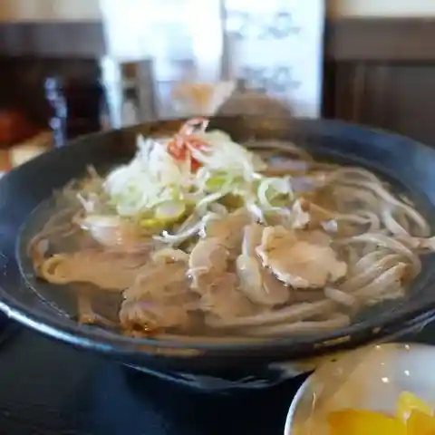
Hakuchou Juurou Soba Honpo
Soba restaurant in Kahoku, Yamagata.
定助そばや
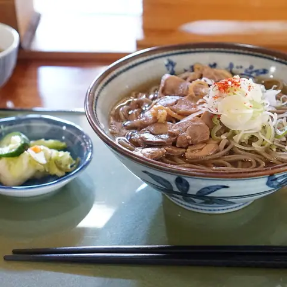
Sadasuke Sobaya
Soba restaurant in Kahoku, Yamagata.
いろは支店
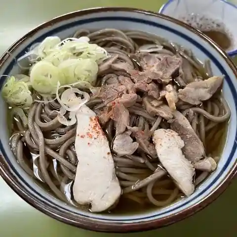
Iroha Shiten
Soba restaurant in Kahoku, Yamagata.
龍横健 谷地店
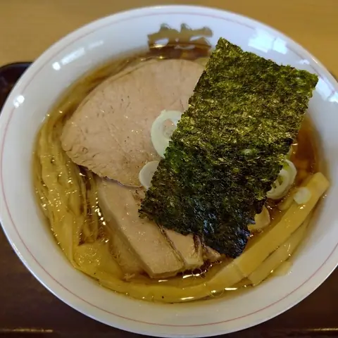
Ryuu Yoko Takeshi Yachi Mise
Ramen shop in Kahoku, Yamagata.
いろは 分店
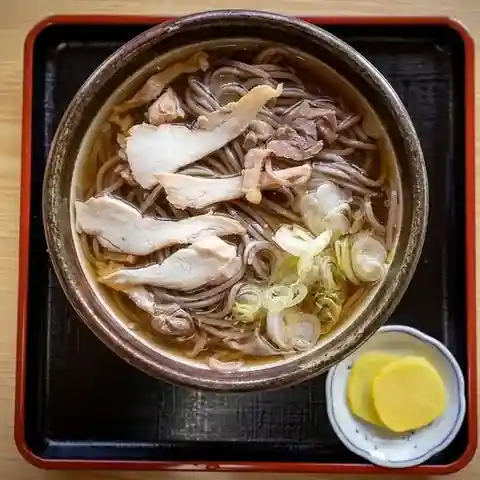
Iroha Bunten
Soba restaurant in Kahoku, Yamagata.
そば処 あお木
Soba Tokoro Ao Ki
Soba restaurant in Kahoku, Yamagata.
岩木そば
Iwaki Soba
Soba restaurant in Kahoku, Yamagata.
食彩遊膳 まる梅
Shokusai Yuu Zen Maru Ume
Soba restaurant in Kahoku, Yamagata.
正福
Sei Fuku
Yakiniku (grilled meat) restaurant in Kahoku, Yamagata.
そば吉
Soba Kichi
Soba restaurant in Kahoku, Yamagata.
ぬーぼうチャウチャウ
Nuubou Chauchau
Yakisoba shop in Kahoku, Yamagata.
パティスリー デ・ジョワ
Pateisurii De Jowa
Cake shop in Kahoku, Yamagata.
肉屋 よし田
Nikuya Yoshi Ta
Yakiniku (grilled meat) restaurant in Kahoku, Yamagata.
吾妻屋
Azuma Ya
Soba restaurant in Kahoku, Yamagata.
麺屋 雪月河。
Men Ya Yuki Gatsu Kawa .
Ramen shop in Kahoku, Yamagata.
中華美食屋 河北町店
Chuuka Bishoku Ya Kahoku Machi Mise
Chinese restaurant in Kahoku, Yamagata.
道の駅 河北 ぶらっとぴあ
Michi No Eki Kahoku Burattopia
Roadside-station eatery in Kahoku, Yamagata.
久兵衛
Kyuubee
Ramen shop in Kahoku, Yamagata.
金ちゃんラーメン 谷地店
Kin Chan Raamen Yachi Mise
Ramen shop in Kahoku, Yamagata.
PUNJAB RESTAURANT
Punjab Restaurant
Indian restaurant in Kahoku, Yamagata.
リトルハウス
Ritoruhausu
Coffee shop in Kahoku, Yamagata.
Sights
Benibana Museum (Former Horigome Residence)
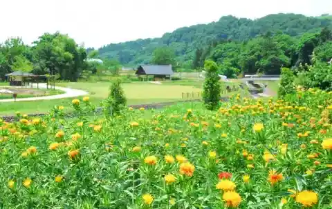
The restored residence of the Horigome family, wealthy safflower merchants, opened as a safflower museum in 1984. In the Edo period the local Mogami safflower was made into dried petal cakes and shipped all the way to Kyoto.
Michi-no-Eki Kahoku Brattopia
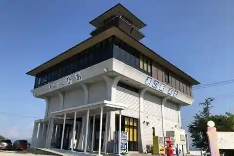
The roadside station at Kahoku's eastern gateway on Route 287, facing the Mogami River. The ground floor sells souvenirs such as cold meat soba and the town's slippers, local sake and light meals, and has tourist information.